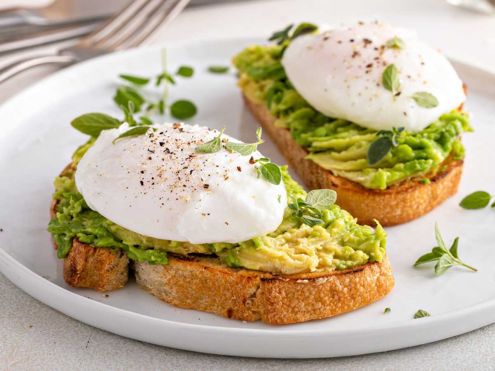

Tortitas de Avena con Requesón y Tomate
Estas tortitas de avena son una opción saludable, ligera y nutritiva para la merienda. Ricas en proteínas gracias a las claras de huevo y con el aporte de fibra y carbohidratos de absorción lenta de la avena, resultan ideales para quienes buscan una alternativa equilibrada sin renunciar al sabor. Combinadas con requesón cremoso y tomate fresco con hierbas, logran un contraste fresco y delicioso, perfecto para una merienda salada y completa.
- 8 claras de huevo
- 70 g de copos de avena
- 1 cucharadita de levadura en polvo
- 3 tomates
- 150 g de requesón
- Sal de escamas
- Pimienta al gusto
- Aceite de oliva
- Hojas frescas de albahaca
- Ramitas de cebollino
Comenzar lavando los tomates y realizando un pequeño corte en cruz en la base de cada uno. Sumergirlos durante unos segundos en agua hirviendo para facilitar el retirado de la piel. Una vez pelados, cortarlos en dados pequeños y mezclarlos con la albahaca y el cebollino previamente picados. Reservar esta preparación fresca.
En un recipiente, colocar los copos de avena junto con las claras de huevo y batir hasta integrar. Añadir la levadura en polvo y una pizca de sal, mezclando nuevamente hasta obtener una preparación homogénea. Calentar una sartén con unas gotas de aceite de oliva y verter pequeñas porciones de la mezcla formando tortitas. Cocinar durante uno o dos minutos hasta que cuajen y se doren ligeramente, luego darles la vuelta para que se cocinen por el otro lado. Repetir el proceso hasta terminar la mezcla.
Para servir, untar una capa de requesón sobre cada tortita y añadir por encima el tomate picado con las hierbas. Finalizar con escamas de sal, pimienta al gusto y un hilo de aceite de oliva antes de disfrutar.

Éclairs con jamón y queso
Estos sándwiches elaborados con pasta choux son una alternativa original, ligera y deliciosa para una merienda salada. Su textura aireada y crujiente por fuera, combinada con un relleno fresco de jamón, queso y hojas verdes, los convierte en una opción equilibrada y diferente a los clásicos bocadillos. Son ideales para reuniones, meriendas especiales o para sorprender con algo casero y creativo.s.
- Pasta choux (según receta base)
- 150 g de lonchas de jamón cocido
- 100 g de queso manchego semicurado
- Hojas de ensalada variadas (rúcula, canónigos u otras)
- Aceite de oliva
- Sal al gusto
- Pimienta al gusto
Colocar papel de horno sobre una bandeja y, con ayuda de una manga pastelera o cuchara, formar tiras de aproximadamente 10 cm de largo con la pasta choux, realizando un pequeño zigzag para darles forma. Llevar a horno previamente precalentado a 210 °C durante 10 minutos y luego bajar la temperatura a 160 °C, continuando la cocción entre 15 y 18 minutos más, hasta que estén inflados y dorados. Retirar del horno y dejar enfriar completamente.
Mientras se hornean, lavar cuidadosamente las hojas de ensalada y secarlas bien. Condimentarlas suavemente con un poco de aceite de oliva, sal y pimienta. Cortar el queso en láminas finas para facilitar el armado. Una vez fríos los éclairs de pasta choux, abrirlos por la mitad en forma horizontal y rellenarlos como si fueran bocadillos, colocando primero una capa de queso, luego el jamón y finalmente las hojas de ensalada aliñadas. Servir frescos y disfrutar.

Tostadas con aguacate y huevos poché
Las tostadas con aguacate y huevo poché son una opción clásica, nutritiva y deliciosa para una merienda completa o un brunch especial. La cremosidad del aguacate, combinada con la suavidad de la yema ligeramente líquida y el pan crujiente, crea un equilibrio perfecto de texturas y sabores. Es una preparación sencilla pero elegante, ideal para quienes buscan algo saludable sin renunciar al sabor.
- 4 rebanadas de pan (integral, de centeno o artesanal)
- 2 aguacates maduros
- 4 huevos frescos
- Vinagre blanco (para pochar los huevos)
- Sal al gusto
- Pimienta negra al gusto
- Aceite de oliva (opcional)
- Hierbas frescas picadas para decorar
Comenzar cortando los aguacates por la mitad, retirando el hueso y extrayendo la pulpa con ayuda de una cuchara. Colocar la pulpa en un bol y aplastarla con un tenedor hasta obtener una textura cremosa pero con algo de cuerpo. Sazonar con sal y pimienta al gusto y reservar.
Para preparar los huevos poché, colocar una olla con abundante agua y llevarla a ebullición suave, luego bajar el fuego para mantener un hervor ligero. Cortar un cuadrado de papel film y colocarlo dentro de un bol pequeño, dejando que el centro forme una pequeña cavidad. Engrasar ligeramente el film con unas gotas de aceite para evitar que el huevo se adhiera. Romper el huevo con cuidado dentro del film, procurando que la yema permanezca intacta. Reunir las puntas del papel formando un pequeño saquito y cerrarlo firmemente con hilo de cocina o una liga, evitando que quede aire en el interior. Sumergir el paquete en el agua caliente y cocinar durante aproximadamente 4 a 6 minutos, según el punto deseado de la yema. Retirar con cuidado, abrir el film y reservar el huevo.
Mientras se cocinan los huevos, tostar las rebanadas de pan hasta que estén doradas y crujientes. Untar generosamente el aguacate triturado sobre cada tostada y colocar encima un huevo poché. Finalizar con una pizca adicional de sal, pimienta negra recién molida, un hilo de aceite de oliva si se desea y hierbas frescas picadas para aportar aroma y frescura.

Chipa
Los chipá caseros son un clásico irresistible de la merienda salada. Con su exterior ligeramente crocante y su interior suave, húmedo y lleno de sabor a queso, son ideales para acompañar el mate o disfrutar recién salidos del horno. Esta receta tradicional, hecha con almidón de mandioca y una mezcla generosa de quesos, garantiza un resultado auténtico y delicioso.
- ½ kg de almidón de mandioca
- 3 huevos
- 150 g de manteca a temperatura ambiente
- 250 g de queso pategrás
- 150 g de queso parmesano
- 150 ml de leche
- 1 cucharadita de sal
- 1 cucharadita de polvo para hornear
Comenzar cortando el queso pategrás en cubos o tiras pequeñas y rallando el queso parmesano con la parte gruesa del rallador. En un bol grande, colocar los quesos junto con el almidón de mandioca y la manteca pomada, integrando con las manos hasta que los ingredientes comiencen a unirse. En otro recipiente, mezclar los huevos con la sal, el polvo para hornear y la leche, batiendo ligeramente con un tenedor hasta que se integren.
Incorporar la mezcla líquida a los ingredientes secos y unir todo con las manos hasta lograr una masa homogénea. No es necesario amasar, pero sí asegurarse de que todos los ingredientes estén bien integrados. Llevar la masa al freezer durante al menos 30 minutos para que tome firmeza.
Una vez fría, formar pequeñas bolitas del tamaño deseado y colocarlas sobre una bandeja apta para horno. Llevar nuevamente al freezer unos minutos más para favorecer que, durante la cocción, queden crocantes por fuera y suaves por dentro. Finalmente, hornear en horno previamente precalentado a temperatura máxima, aproximadamente 230 °C, durante 10 a 11 minutos, hasta que estén apenas doradas. Servir calientes para disfrutar su mejor textura y sabor.